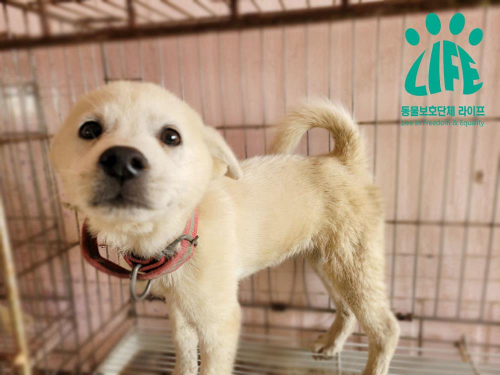
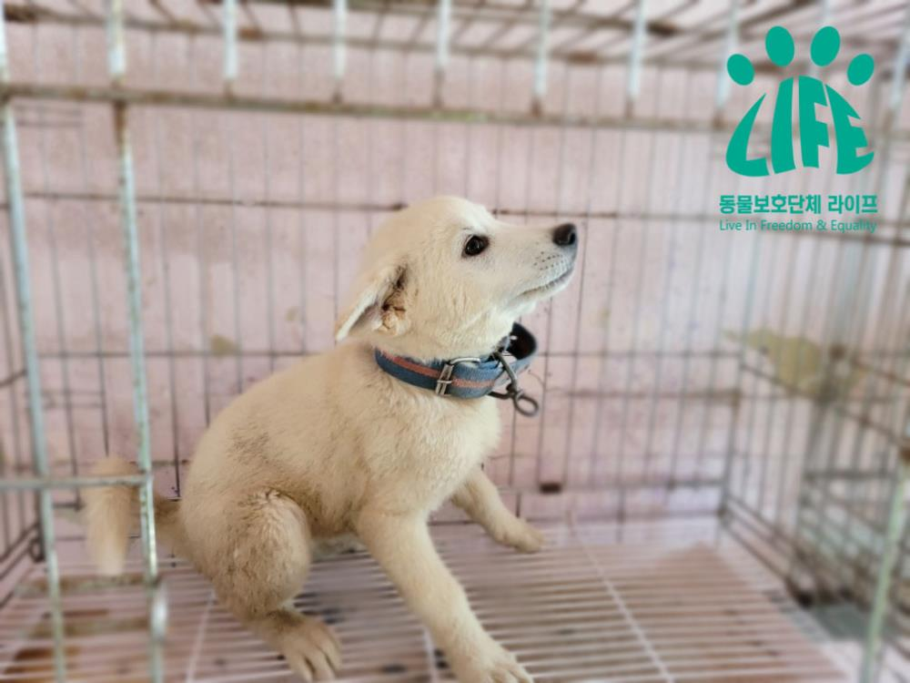

Puppies who watched from the side as their mother dog was hit by a hammer and died horribly
Registration Date Author Life Attachment activitydata_12_06{kind=link}
September 18,
On the roof of a house in Moradong, Busan City Ideological District
A man in his 60s is in front of the cubs
Ruthlessly Hammering the Mother Dog
There was a beating and killing incident.
The incident was reported by a resident.
When the police were dispatched, they were tied to the roof of the house.
There was a large amount of bleeding on the head of the mother dog,
Next to it is a blunt force that appears to have been used in abuse.
The 'hammer' was with them.
The police then asked the dog owner for an inspector.
"You beat me to death, so take care of it."
He replied, police said.
He was bleeding and breathing.
In order to save the mother dog, the police
First of all, I contacted the relevant municipality.
However, the local animal protection officer
An urgent animal cruelty case has occurred.
Facing a complaint without immediate action
Only the shelter contact information was handed over to the police,
The police who called the shelter
"Puppies with owners are tough.
We only treat organic dogs."
I heard the answer.
The police do not give up
Keep looking for a place to get help
I contacted the animal protection organization Life.
As soon as Life was contacted by the police,
Rescue efforts in other areas
I finished it in a hurry and rushed to the scene,
Unfortunately
The mother dog had already died.
The harrowing scene was
It was heartbreaking that it was hard to put it into words.
Next to the carcass of the mother dog
Blood stains were sticking in all directions.
A hammer, a tool for killing, was placed in a dungeon.
Animal cruelty suspects
Life's question of why he killed the dog
"You can't give a dog anywhere that bites a man,
That's why I killed him."
The most recent bite
It was said to be 1 year and a half ago.
I was ferocious in giving them food.
Deciding to kill him.
Come with a hammer and head the dog several times
He proudly says he was knocked down.
For those who have dogs,
As you all know,
The dog you were raising suddenly for no reason
There is no biting of a person.
To the person whose animal takes care of the food
What does it mean to be wild?
To that poor mother dog, the accused
He was neither a family member, nor a colleague, nor a friend.
That relationship has been going on for a whopping 4 years.
Trying to rectify that relationship
There was no effort whatsoever.
The feelings between each other, which had gotten so bad,
In the end, the harrowing consequences of death
Evoked.
On the disastrous appearance of the mother dog
Standing in a daze,
In hindsight, the mother dog left behind
Two puppies began to be seen.
Just 3-4 meters from the dead mother,
Two puppies aged 2-3 months
Looks the biggest in the world
The most dependent mother dog in the world
The accused was struck by a hammer wielded and screamed,
The whole process of struggling with pain and fear
I had to see it with my own eyes.
As a human being, I was so sorry,
Anger flared up,
What it was like at the time of the urgency
It passed through my head like a video.
The mother dog is abused and
Watching the dying process as it is
To heal the trauma of the cubs
We will make an effort in parallel.
The image of being frightened and flinching in front of a person
As I watch, I cry again.
Retrieve the carcass of the mother dog and
Two puppies
Through the waiver of ownership of the dog
We can rescue and protect it.
After the incident
The local government official in charge of the relevant municipality
Even in the event of a serious animal cruelty incident
It was confirmed that it was a complacent administration.
If only there had been active action by the municipality.
Precious life through hospital treatment
It is a great pity that it could have been saved.
We strongly protest against the municipality in question.
To prevent recurrence
We will ask for training of animal protection officers, etc.
Life Goes to Animal Protection
The complacency of the local animal protection official
It's not like I've seen passive administration once or twice.
We will continue to think about fundamental measures.
A society where anyone can raise animals
It's a tragic ending.
Before you have a pet
Ensuring that animal protection education is mandatory, etc.
Such as the Pet Custody Permit System
The introduction of a scheme is required.
Animal Protection Group Life
Strengthening the punishment of animal cruelty and
Improving the system to prevent animal cruelty
I will try harder.
Leaving the young cubs behind
Good luck to the mother...
Animal cruelty incident, and since then (news of the puppy's current situation)
Many of you are a puppy of the
He wondered what was going on.
Children who are only 2-3 months old
The process by which the mother dog dies horribly
You'll be watching from the sidelines.
It was an incident of emotional abuse.
At the time of the incident?
Rescue immediately through the waiver of ownership of the dog,
It was entrusted to the Ideological District Office Foster Shelter.
(Life Office currently has
Friends rescued from a cat factory
I have difficulty in arranging space because I am living)
Puppy (1) Egg beans
Puppy (2) Moon Bean
But for children,
Trauma treatment and other full-fledged care
Determined to be necessary
As soon as possible to the Life Foster Care Center
The transfer process was carried out.
As a result, today (22 September)
I was moved to the Life Foster Home.
Break out of trauma for children
Until you meet a good family
Life will be with you.
▶▶▶Apply for adoption of puppies
Clicking on the logo below will take you to the adoption application filling page.

We will create a world where animals and people coexist.
Animal Protection Group Life